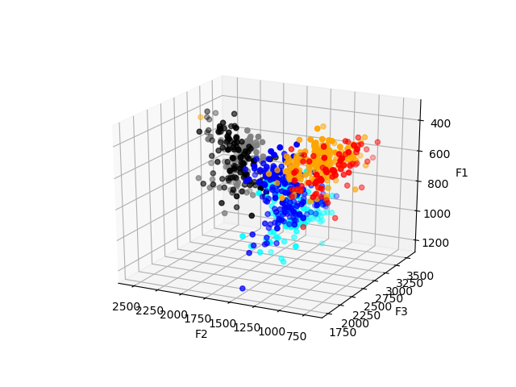
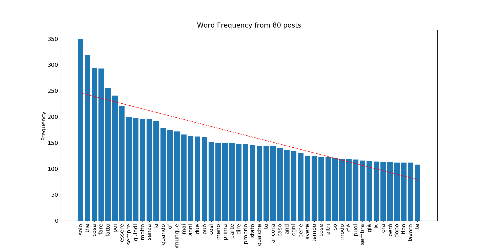
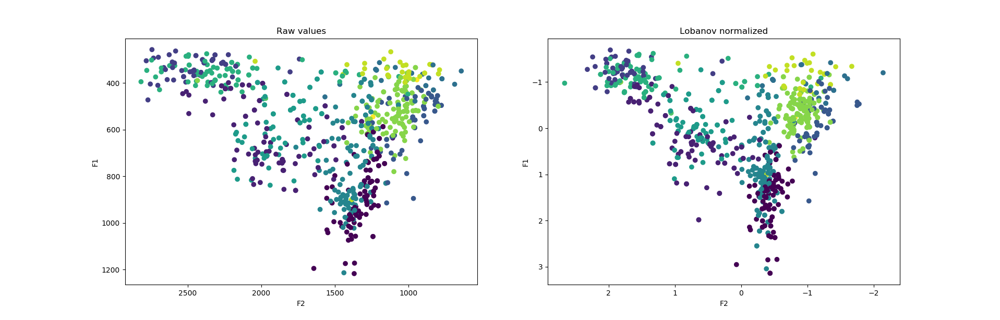
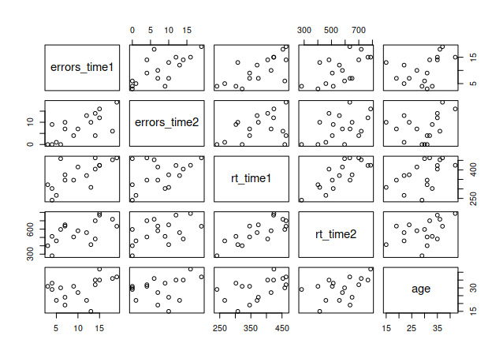
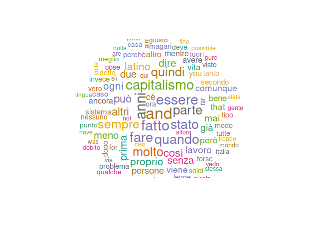
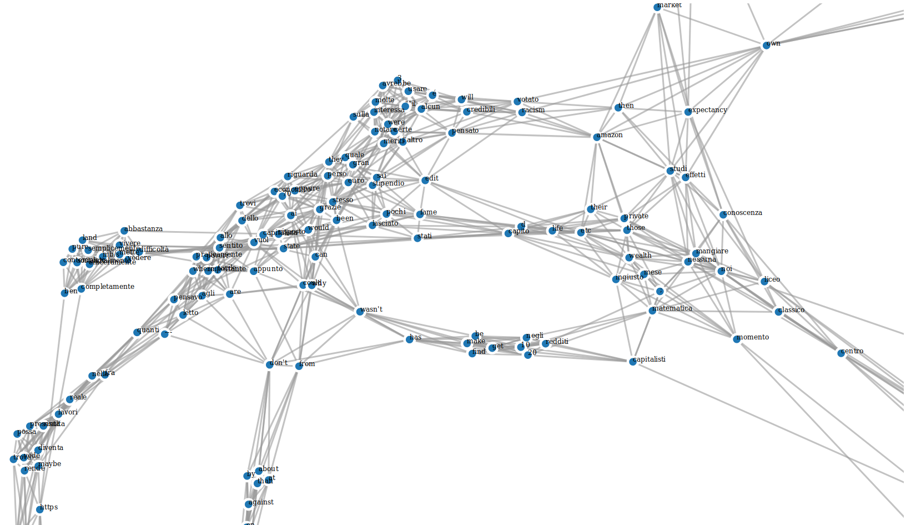

I linguaggi di programmazione e strumenti più utili per linguisti
Table of Contents
Quali sono i migliori e più usati strumenti per raccogliere ed analizzare dati? Quali sono i linguaggi di programmazione con librerie utili per linguisti e quali i più richiesti nel mondo del lavoro?
Se sei un linguista e non conosci almeno il 90% di questi, meglio mettersi al passo. Se stai per iniziare il tuo corso di laurea in linguistica, parti in vantaggio.
Linguaggi di programmazione:
| Python | R |
|---|---|
| NLTK | Vowels |
| Scikitlearn | languageR |
| Parselmouth | cluster |
| LingPy | corpus |
Python
Python offre l'opportunità di lavorare con molte librerie sviluppate specificamente per il natural language processing (come NLTK) o altre che includono funzionalità simili (SciKitLearn). Questo linguaggio di programmazione è ormai un must have e anche quando si fa domanda per posizioni non computazionali, o addirittura non linguistiche, conoscerne bene le basi può dare un grosso vantaggio. A quanto pare saper programmare può dare in generale un grosso vantaggio e l'informatica, così come il campo dell'A.I. e blockchain, ha una carenza ed alta richiesta di programmatori un pò in tutto il mondo. Giusto per saperne di più a riguardo:
- Demand for Programmers Hits Full Boil as U.S. Job Market Simmers
- This is the skill you need today if you want a job in one of the highest paying industries
- Will learning to code help you get a job?
A tal proposito, Python è uno dei linguaggi più consigliati per chi inizia per la prima volta ad avvicinarsi al mondo della programmazione o data science. Librerie come Pandas, Matplotlib, SciKitLearn ed NLTK offrono a chiunque la possibilità di sperimentare ed imparare a lavorare con dati non solo linguistici, ma di ogni tipo.
Oltre a poter rappresentare i propri dati in 2d e 3d con Matplotlib, è anche possibile addentrarsi nel mondo del machine learning con NLTK e SciKit Learn, partendo da semplici modelli di sentiment analysis che classificano testi in modo binario.


R
R è il linguaggio di programmazione più usato nella ricerca accademica quando si parla di statistica e big data, ma anche quando si parla di corpus analysis e fonetica i packages disponibili sono tantissimi.
Molti corsi di laurea fanno lavorare ancora su SPSS o Excel, ma R ha il vantaggio di essere open source e di poter rendere la riproducibilità di codice e ricerca accessibile a chiunque, così da rendere l'affidabilità dei risultati scientifici più solida.
Packages come vowels e languageR sono tra i più comunemente usati nella linguistica computazionale, fonetica e linguistica dei corpora.
In più, R permette di creare in maniera molto rapida ed intuitiva grafici relativamente personalizzabili e di alta qualità come i seguenti:



RegEx
Questo è forse uno degli strumenti che non spesso vengono menzionati molto, o affatto, a molti studenti di linguistica, mentre è un elemento chiave per molti posti di lavoro nella linguistica computazionale.
I regex (regular expressions) sono pattern che tramite algoritmi riescono a trovare stringe che corrispondono al pattern fornito. I regex sono un ottimo strumento non solo perchè sono richiesti per i posti di linguistica computazionale migliori, ma anche perchè saperli usare da un pò l'impressione d'avere superpoteri. Sono utilizzabili in ogni sistema operativo in diversi software (Emacs, GREP, PyCharm, Notepad++…) e ogni linguaggio di programmazione. La loro sintassi è più o meno la stessa ovunque, sono veloci ed efficienti, sembra di scrivere con l'alfabeto dei Predator, e puoi sostituire parole o frasi nei tuoi blog post in pochi secondi.
Git
Git non è un linguaggio di programmazione, è un sistema di version-control ma viene spesso erroneamente inserito dai recruiters fra i linguaggi di programmazione richiesti ¯\_(ツ)_/¯. Viene utilizzato specialmente da gruppi di sviluppatori per poter collaborare facilmente sugli stessi file.
Conoscere git diventa sempre più essenziale dato che la conoscenza di programmazione base è sempre più richiesta e collaborare con altri nelle imprese è una costante.
Agli inizi può essere un pò confusionario come sistema, ma offre incredibili vantaggi e saperlo utilizzare bene può aiutare a costruire un portfolio su GitHub, GitLab o Bitbucket.
Altri linguaggi utili da dover conoscere, ma che non hanno la stessa curva d'apprendimento, sono:
- HTML
- XML
- CSV
- Markdown
Questi sono linguaggi di markup e formattazione che tornano utili sia nello scrivere documentazione, che nell'estrarre e classificare dati linguistici.
Software
Prima di inizare la lista di software: la maggior parte di questi software sono closed source. Nonostante ciò, sono purtroppo molto usati ancora e quindi alle volte è obbligatorio imparare ad usarli o ci si aspetta che il linguista abbia un minimo di dimestichezza con essi.
Detto ciò, non supporto l'utilizzo software closed source nella ricerca. Chiunque abbia un minimo di rispetto per la validità scientifica e la serietà del lavoro dello scienziato e ricercatore dovrebbe ravvedersi dall'utilizzare o addirittura supportare e sponsorizzare programmi che vanno contro il metodo scientifico.
Sintassi, semantica e analisi del testo
Antconc (link)
Antconc è un software che permette di svolgere anilisi dei corpora su ogni sistema operativo. Non è open source ma è gratuito e può essere scaricato da __
E' possibile svolgere analisi di concordance, ngrams, frequenza di parole e collocation.
Il software permette anche di essere utilizzato in modo da aiutare l'apprendimento delle lingue nascondendo le keywords nei risultati di una ricerca per collocation. In questo modo lo studente dovrà indovinare quale delle keyword selezionate sarà la più adatta in una frase e avere feedback immediato.
SketchEngine
Sketch Engine è una web app closed source che permette di accedere a diversi corpora ben conosciuti (BAWE, Brown, ecc…) e di effettuare task di linguistica dei corpora su di essi o su alcuni corpora personali che si possono importare.
Sketch Engine offre abbonamento gratuito agli studenti, in caso contrario è a pagamento. Oltre a fornire semplici funzioni di collocation, concordance e word frequency offre anche delle funzioni per la rappresentazione dei dati.
Linguistica UChicago (link)
Linguistica non è forse un software altrettanto conosciuto, ma è open source e, personalmente, mi ha dato un'ottima impressione e dei risultati molto apprezzati. Inoltre, essendo scritto in Python, con un pò d'esperienza ed impegno lo si può calibrare un pò secondo le proprie necessità.
Inoltre, le rappresentazioni in JavaScript dei manifold che crea dai corpora sono semplicemente bellissime.

Fonetica
Audacity (link)
Audacity è un ottimo open source software per registrare audio, fare editing e modificare o pulire una traccia. Solitamente viene usato per registrare reading tasks o interviste in fonetica e sociolinguistica sul campo.
PRAAT (link)
Se avete studiato fonetica e non sapete cosa è PRAAT andate immediatamente a leggere. Fingerò di non aver visto nulla.
Conclusione
Questi sono quindi i linguaggi di programmazione e strumenti che sembrano essere più usati e richiesti, ed anche quelli con cui ho avuto esperienza diretta. Se ne conoscete altri o avete ulteriori consigli sentitevi liberi di contribuire e migliorare questo breve articolo.